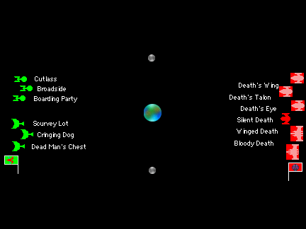

| Round: | 2 |
|---|---|
| Game: | 3 |
| Opponents: | 5 Larry Bingham / Independent (IKS & Orion) Squadron 1 |
| 7 Ken Buchs / Romulan Squadron 1 | |
| Victor: | 5 Larry Bingham / Independent (IKS & Orion) Squadron 1 |
| Play Date: | 16 February 2003 |
| Play Location: | The Keep, Fort Wayne, Indiana |
Order of Battle
5 Larry Bingham / Independent (IKS & Orion) Squadron 1
6 Ships / Combat Efficiency: 299.4
| Ship Name | Class Name | Type | Class | |||
|---|---|---|---|---|---|---|
| Cringing Dog | A-2A Scrap Dog | Destroyer | VII | |||
| Scurvey Lot | A-2A Scrap Dog | Destroyer | VII | |||
| Dead Man's Chest | A-2A Scrap Dog | Destroyer | VII | |||
| Cutlass | Guardian Mk I | Gunboat | V | |||
| Broadside | Guardian Mk I | Gunboat | V | |||
| Boarding Party | Guardian Mk I | Gunboat | V |
7 Ken Buchs / Romulan Squadron 1
6 Ships / Combat Efficiency: 299.2
| Ship Name | Class Name | Type | Class | |||
|---|---|---|---|---|---|---|
| Bloody Death | V-27 Comet of Destruction 2 | Cruiser | XII | |||
| Winged Death | V-27 Comet of Destruction 2 | Cruiser | XII | |||
| Silent Death | T-2 Death Talon 7 NC | Destroyer | VI | |||
| Death's Wing | T-12 Star Raven 1 | Destroyer | V | |||
| Death's Talon | T-12 Star Raven 1 | Destroyer | V | |||
| Death's Eye | T-12 Star Raven 1 | Destroyer | V |
Battle Description
This was a unique game, at least up to this point in the tournament. The two most common comments from the spectators each time a player made a move were either; "What the h--l is he doing?" or "Why did he do that?"
The Imperial Klingon States (IKS) opened their part of the engagement with a symmetrical deployment. The Scrap Dogs took up a triangular formation on the right flank, and the Guardians did the same on the left flank. The formations advanced at a moderate speed.
There was little surprise for the start of the Romulans. All five cloakable ships immediately cloaked. The Silent Death, unable to cloak led the advance along with the other three destroyers. The two cruisers, moving at less than half the speed of the destroyers, advanced slowly on the Romulan left flank.
The IKS continued a steady advance, with the two formations splitting slightly farther apart as they moved toward the planet. They also kept scanning for the cloaked ships they knew were out there somewhere.
The Romulan destroyers raced ahead and took up a position close behind the planet. Their cruisers followed much more slowly behind.
At this point, neither fleet had directly seen the other, as they both carefully kept the planet between them.
The IKS advanced around either side of the planet. The Guardian class gunboats got their first sighting of the lone Romulan destroyer at a range of only about 50,000 kilometers.
The cloaked Romulan destroyers came to a dead halt to await the appearance of the IKS around the planet. The Silent Death kept up a slight movement, which allowed it to pull in front of the other destroyers. The cruisers, still advancing slowly, were well to the rear.
When the firing started there was no finesse involved, whatsoever. The Broadside, Scurvey Lot, and Cringing Dog all locked onto the Silent Death. The other three IKS ships continued to look for cloaked ships, and detected one of the slowly approaching cruisers. The Romulan destroyers paired up and each pair took on a Guardian. In the exchange of fire each of the two Guardians took moderate damage, but this included bridge hits (preventing repairs), and sensor hits (preventing lock-ons). The IKS fire smashed the Silent Death, which not so quietly broke into millions of very little pieces.
The Broadside and Boarding Party, with temporarily unrepairable sensors, turned away from the fight to hide behind a moon and the planet. Seeing a cruiser decloak, the other ships in the force headed for it.
The three Star Raven class destroyers moved slowly back along their entry course, but never dropped their cloaks to engage the enemy. The two Romulans cruisers decided to do without their cloaks for a while and finally entered the fight, mainly because it had come to them.
The Romulan cruisers concentrated their fire on the Cutlass, which, like the other IKS gunboats, took moderate damage including bridge and sensor hits. Fire from the Cutlass and the three Scrap Dogs did moderate damage to the Winged Death in return.
The Romulan destryers continued their slow stroll beside the main battle, but dropped their cloaks so they could fire into the melee. The Winged Death attempted to maneuver against the Scrap Dogs, but its extremely slow speed prevented it from doing this effectivelly. The Bloody Death activated its cloak, and disappeared for a while without engaging the enemy.
Finally able to make some repairs, the Broadside and Boarding Party turned back toward the battle, although their earlier long movements had carried them well clear of the action. With damage to its sensors, the Cutlass ran off behind the Scrap Dogs to attempt to make repairs. Meanwhile, the three Scrap Dogs followed the Winged Death.
The Romulans split their fire between two ships. Two destroyers engaged the Scurvey Lot and a destroyer and the Winged Death engaged the Dead Man's Chest. Both ships took heavy damage (but neither lost its sensors!). All of the IKS Scrap Dogs replied against the Winged Death, savaging it from behind. Their concentrated fire gutted the cruiser's impulse engine and ripped the starboard warp nacelle off of the ship.
The Romulan fleet appeared to be in full retreat. The destroyers and the Bloody Death cloaked and stayed out of the fight. The Winged Death, too damaged to cloak, ran past the cloaked ships.
Although the Romulans were clearly running and attempting to regroup, the IKS made at best only a half-hearted effort at pursuit. The heavily damaged Cringing Dog, appeared to live up to its name as it began to withdraw from the fight. The somewhat less damaged Dead Man's Chest, eased away from the Romulans without actually seeming to run from them. Of the Scrap Dogs, only the Scurvey Lot turned in the general direction of the Romulans and moved toward them. The three Guardian class gunboats, now well repaired and with working sensors moved toward the Scrap Dogs.
The Winged Death gave a final insult to the IKS by hitting the Boarding Party with its rear photon torpedo as it ran. All of the IKS ships, except the Cringing Dog, fired on the Winged Death at long range. The ill fated cruiser took more damage, but was not destroyed.
After Turn 6 the game was stopped due to a lack of time. At that point there was a debate among the spectators as to who was ahead. A count of the damage was made to determine the winner.
| Nation | Type | Ship | Damage | Total | ||||
|---|---|---|---|---|---|---|---|---|
| Romulan Empire | Cruiser | Bloody Death | 0 | |||||
| Cruiser | Winged Death | 62 | ||||||
| Destroyer | Silent Death | 103 | * | |||||
| Destroyer | Death's Wing | 1 | ||||||
| Destroyer | Death's Talon | 0 | ||||||
| Destroyer | Death's Eye | 0 | 166 | |||||
| Imperial Klingon States | Destroyer | Cringing Dog | 26 | |||||
| Destroyer | Scruvey Lot | 0 | ||||||
| Destroyer | Dead Man's Chest | 24 | ||||||
| Gunboat | Cutlass | 8 | ||||||
| Gunboat | Broadside | 17 | ||||||
| Gunboat | Boarding Party | 20 | 95 | |||||
| * Includes x1.2 multiplier for a destroyed ship. | ||||||||
And the winner was ... the IKS.
The result was totally anticlimactic. The total damage was unexpectedly small. Each player, and especially the IKS, had indicated that the ships were "heavily damaged". In fact, with the exception of the Winged Death, all of them were actually only lightly damaged (by campaign standards). The lack of damage on the Romulan ships was generally due to their remaining cloaked much of the time, even to the exclusion of firing. This, of course, also contributed to the lack of damage on the IKS ships. The IKS ships withdrew from the fight when they received modest damage, and so had time to perform repairs, which greatly reduced their damage total.